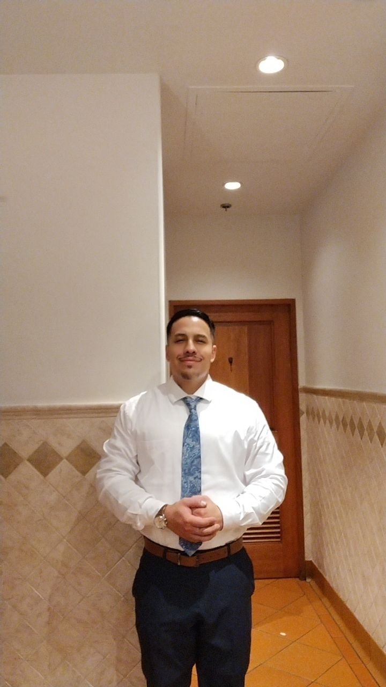
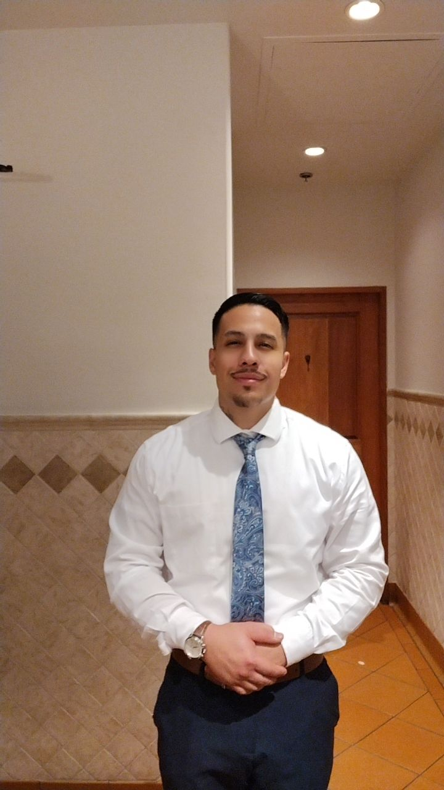

Focused on dignity, responsibility, forward momentum, and building outcomes that elevate the next generation.
Professional / Futuristic / Robotic Precision
Francisco Fonseca
A high-discipline vision for family, leadership, business, and the future. This alternate concept frames Francisco as a faith-guided builder of advanced possibility: modern, intentional, technologically sharp, and committed to creating impact that serves people well.
Core Identity
Father + Builder
Primary Engine
Business Discipline
Higher Guidance
Blessed by God

Core Principles
Robotic clarity with human compassion.
The direction is futuristic, but the values remain grounded: treat people well, move forward, and build something lasting.
A professional visual system designed to feel advanced, bold, and purposeful.
Dignity Protocol
Every interaction should reflect compassion, love, and respect. Strength without dignity is incomplete.
Forward Motion
Progress is built through discipline, optimism, and the willingness to keep moving with purpose.
Next-Gen Blueprint
Current choices shape future generations. Leadership is measured by what it leaves behind.
Impact Engine
Day by day, second by second, the goal is to contribute something meaningful to the world around us.
Mission File
An advanced personal brand built around faith, family, business, and possibility.
This version reframes the message into a cleaner AI-technology visual language while keeping Francisco’s voice and core beliefs intact.
I am a father and proud to be an American. I believe people should dream big, build boldly, and keep their eyes on what can be created through focused action. We are imperfect as humans, but we still have a responsibility to move forward with integrity, treat others with compassion, and help where we can. Real progress comes from conviction, discipline, and the courage to keep constructing a better future for the generations that follow.
Visual Archive
Technology aesthetic, grounded presence.
Additional imagery is treated like part of a futuristic interface: cinematic, high-contrast, and contained within controlled panels.

Executive Signal
Professional presentation with a clean, elevated interface language that feels more AI-lab than traditional biography page.

Future State
Strong layout, metallic glow, orbital motion, and restrained futuristic styling designed to feel premium instead of gimmicky.